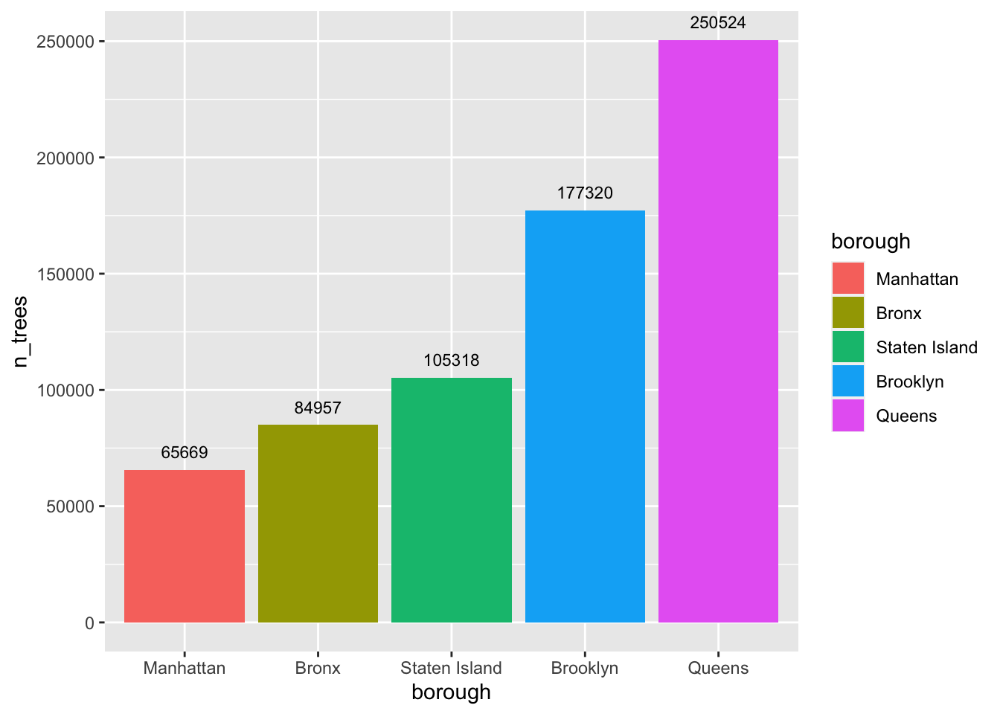
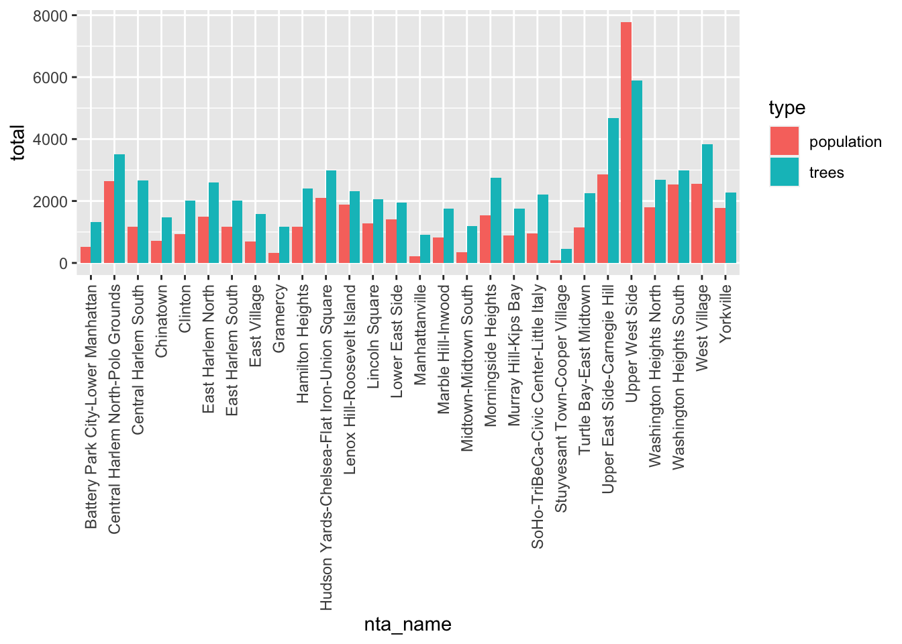
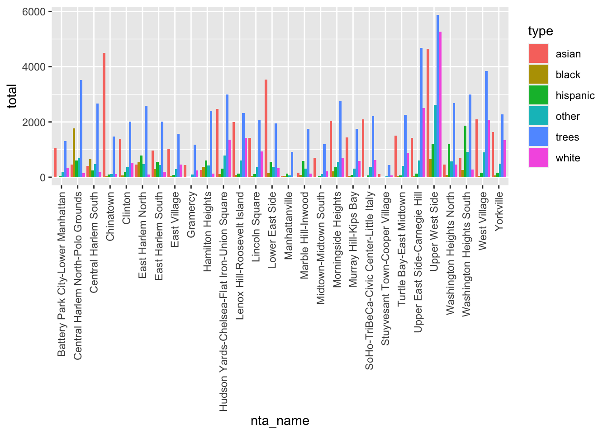
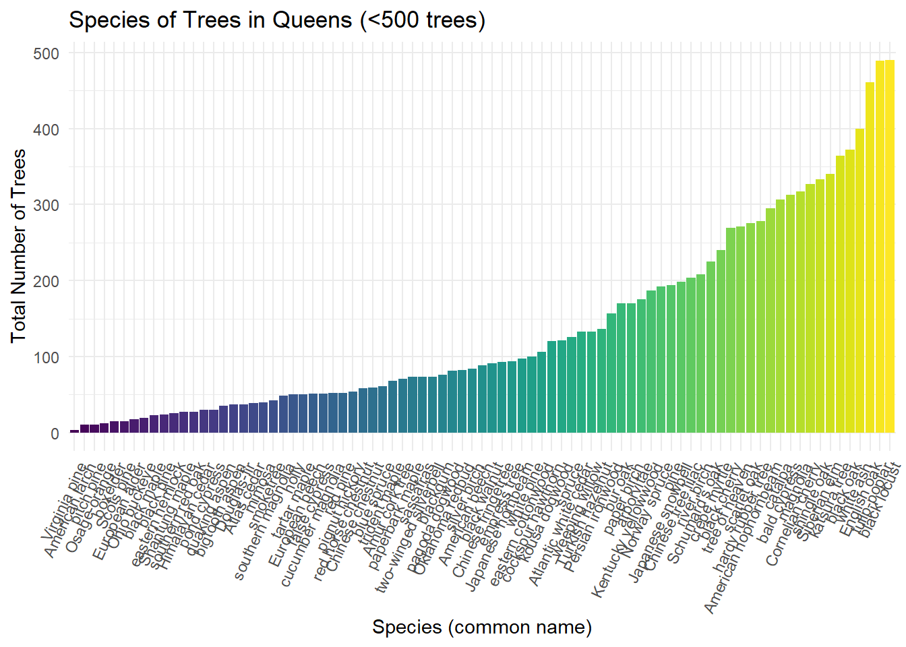
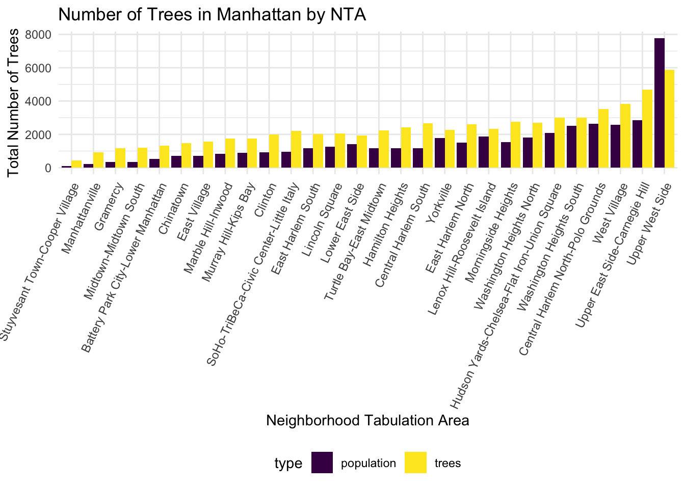
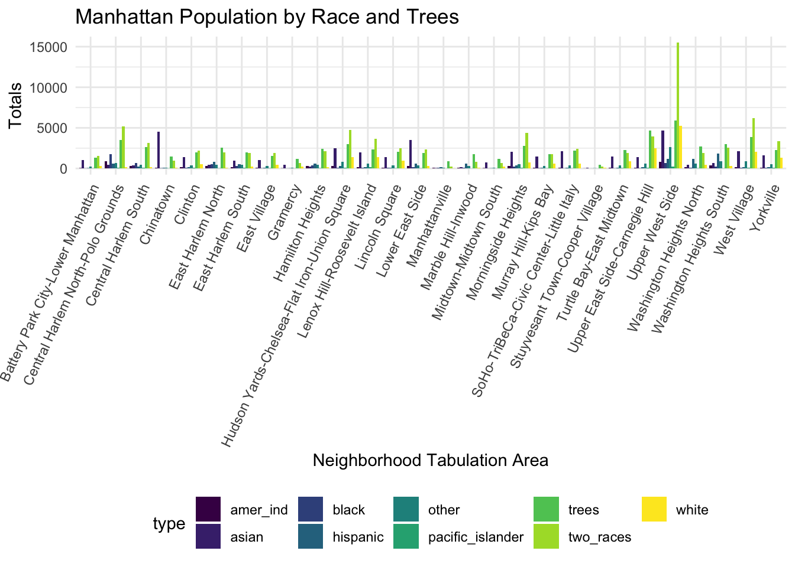
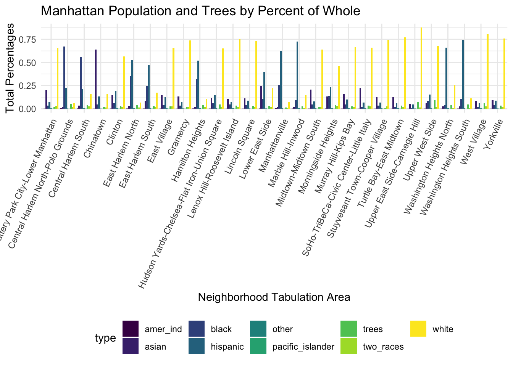

wanting to look closer at relationship between tree dataset and socio-demographic dataset.
library(tidyverse)
theme_set(theme_minimal() + theme(legend.position = "bottom"))
options(
ggplot2.continuous.colour = "viridis",
ggplot2.continuous.fill = "viridis"
)
scale_colour_discrete = scale_colour_viridis_d
scale_fill_discrete = scale_fill_viridis_dtree_2015_raw =
read_csv("large_tree_data/2015_tree_raw.csv", na = c("", "NA", "Unknown")) |>
janitor::clean_names() |>
select(tree_id, status, health, spc_common, nta)## Rows: 683788 Columns: 45
## ── Column specification ────────────────────────────────────────────────────────
## Delimiter: ","
## chr (26): created_at, curb_loc, status, health, spc_latin, spc_common, stewa...
## dbl (19): tree_id, block_id, tree_dbh, stump_diam, postcode, community board...
##
## ℹ Use `spec()` to retrieve the full column specification for this data.
## ℹ Specify the column types or set `show_col_types = FALSE` to quiet this message.pop_race_2010 = readxl::read_excel("small_data/pop_race2010_nta.xlsx", skip = 6, col_names = FALSE, na = "NA") |>
rename(
"borough" = "...1" ,
"census_FIPS" = "...2",
"nta" = "...3",
"nta_name" = "...4",
"total_population" = "...5",
"white_nonhis" = "...6",
"black_nonhis" = "...7",
"am_ind_alaska_nonhis" = "...8",
"asian_nonhis" = "...9",
"hawaii_pac_isl_nonhis" = "...10",
"other_nonhis" = "...11",
"two_races" = "...12",
"hispanic_any_race" = "...13"
) |>
drop_na()## New names:
## • `` -> `...1`
## • `` -> `...2`
## • `` -> `...3`
## • `` -> `...4`
## • `` -> `...5`
## • `` -> `...6`
## • `` -> `...7`
## • `` -> `...8`
## • `` -> `...9`
## • `` -> `...10`
## • `` -> `...11`
## • `` -> `...12`
## • `` -> `...13`Distribution of Race by Borough
dem_race =
pop_race_2010 |>
group_by(borough) |>
summarize(white = sum(white_nonhis),
black = sum(black_nonhis),
asian = sum(asian_nonhis),
am_ind_alaska = sum(am_ind_alaska_nonhis),
hawaii_pac_island = sum(hawaii_pac_isl_nonhis),
other = sum(other_nonhis),
hispanic_all_races = sum(hispanic_any_race),
two_races = sum(two_races)
) |>
pivot_longer(
white:two_races,
names_to = "race",
values_to = "n"
) |>
mutate(borough = fct_reorder(borough, n))
ggplot(data = dem_race, aes(x = borough, y = n, fill = race)) + geom_bar(stat = 'identity') + geom_text(aes(label = n), size = 3, fontface = "bold", position = position_stack(vjust = 0.5)) +
labs(
title = "Population of Borough by Race",
x = "Borough",
y = "Total Population"
)
all_data = left_join(tree_2015_raw, pop_race_2010, by = "nta")Total Number of Trees in each borough
number_tree =
all_data |>
group_by(borough) |>
summarize(n_trees = n_distinct(tree_id)) |>
mutate(borough = fct_reorder(borough, n_trees))
ggplot(data = number_tree, aes(x = borough, y = n_trees, fill = borough)) + geom_bar(stat = 'identity') + geom_text(aes(label = n_trees), size = 3, vjust = -1) +
labs(
title = "Number of Trees in each Borough",
x = "Borough",
y = "Total Number of Trees"
)
Queens Trees by Species
#prevalent trees (n > 500)
queens_prev_trees =
all_data |>
filter(borough == "Queens") |>
count(spc_common) |>
filter(n > 500) |>
mutate(spc_common = fct_reorder(spc_common, n))
ggplot(data = queens_prev_trees, aes(x = spc_common, y = n, fill = spc_common)) + geom_bar(stat = 'identity') + theme(legend.position = "none", axis.text.x = element_text(angle = 65, hjust=1)) +
labs(
title = "Species of Trees in Queens (>500 trees)",
x = "Species (common name)",
y = "Total Number of Trees"
)
#rare trees (n < 500)
queens_rare_trees =
all_data |>
filter(borough == "Queens") |>
count(spc_common) |>
filter(n < 500) |>
mutate(spc_common = fct_reorder(spc_common, n))
ggplot(data = queens_rare_trees, aes(x = spc_common, y = n, fill = spc_common)) + geom_bar(stat = 'identity') + theme(legend.position = "none", axis.text.x = element_text(angle = 65, hjust=1)) +
labs(
title = "Species of Trees in Queens (<500 trees)",
x = "Species (common name)",
y = "Total Number of Trees"
)
Trees in Manhattan by NTA
mhtn_number_tree =
all_data |>
filter(borough == "Manhattan") |>
group_by(nta_name) |>
summarize(n_trees = n_distinct(tree_id),
n_population = (sum(total_population)/100000)) |>
pivot_longer(
n_trees:n_population,
names_to = "type",
names_prefix = "n_",
values_to = "total"
) |>
mutate(nta_name = fct_reorder(nta_name, total))
ggplot(mhtn_number_tree, aes(x = nta_name, y = total, fill = type)) + geom_bar(stat = 'identity', position = 'dodge')+ theme(axis.text.x = element_text(angle = 65, hjust=1)) +
labs(
title = "Number of Trees in Manhattan by NTA",
x = "Neighborhood Tabulation Area",
y = "Total Number of Trees"
)
Manhattan Trees and Proportion of Race
pop_proportion =
all_data |>
filter(borough == "Manhattan") |>
group_by(nta_name) |>
summarize(n_trees = n_distinct(tree_id),
n_white = (sum(white_nonhis)/100000),
n_black = (sum(black_nonhis)/100000),
n_asian = (sum(asian_nonhis)/10000),
n_pacific_islander = (sum(hawaii_pac_isl_nonhis)/1000),
n_amer_ind = (sum(am_ind_alaska_nonhis)/1000),
n_other = (sum(other_nonhis)/1000),
n_hispanic = (sum(hispanic_any_race)/100000),
n_two_races = (sum(two_races)/1000)
) |>
pivot_longer(
n_trees:n_two_races,
names_to = "type",
names_prefix = "n_",
values_to = "total"
)
ggplot(pop_proportion, aes(x = nta_name, y = total, fill = type)) + geom_bar(stat = 'identity', position = 'dodge')+ theme(axis.text.x = element_text(angle = 65, hjust=1)) +
labs(
title = "Manhattan Population by Race and Trees",
x = "Neighborhood Tabulation Area",
y = "Totals"
)
Manhattan Trees per NTA and Race per Total Pop
number_mhtn =
all_data |>
filter(borough == "Manhattan") |>
summarize(n_trees = n_distinct(tree_id))
percentages =
all_data |>
filter(borough == "Manhattan") |>
group_by(nta_name) |>
summarize(n_trees = (n_distinct(tree_id)/65669),
n_white = (sum(white_nonhis)/sum(total_population)),
n_black = (sum(black_nonhis)/sum(total_population)),
n_asian = (sum(asian_nonhis)/sum(total_population)),
n_pacific_islander = (sum(hawaii_pac_isl_nonhis)/sum(total_population)),
n_amer_ind = (sum(am_ind_alaska_nonhis)/sum(total_population)),
n_other = (sum(other_nonhis)/sum(total_population)),
n_hispanic = (sum(hispanic_any_race)/sum(total_population)),
n_two_races = (sum(two_races)/sum(total_population))
) |>
pivot_longer(
n_trees:n_two_races,
names_to = "type",
names_prefix = "n_",
values_to = "total"
)
ggplot(percentages, aes(x = nta_name, y = total, fill = type)) + geom_bar(stat = 'identity', position = 'dodge')+ theme(axis.text.x = element_text(angle = 65, hjust=1)) +
labs(
title = "Manhattan Population and Trees by Percent of Whole",
x = "Neighborhood Tabulation Area",
y = "Total Percentages"
)